长视频生成基模
本章先关注如何突破训练时的固定视频窗口：计算怎样压缩，片段怎样连接，早期错误怎样避免传到后面。规划一串场景与持续生成一个长镜头有不同难点；本章按重要原论文逐篇展开，先从LVDM的层次潜空间扩散开始。
问题：短窗口模型怎样生成长视频
前一章的规划可以决定事件顺序与对象位置，但即使计划已经明确，生成器仍面临一个计算问题： 训练时只看一小段视频的网络，怎样持续生成远长于训练窗口的内容？ 如果把所有帧一次放进网络，显存与计算会快速增加；如果每次只续写一小段，上一段的错误又会成为下一段的条件，逐步累积。 #He-2022-LVDM
He 等人提出的 LVDM，论文全名为 Latent Video Diffusion Models for High-Fidelity Long Video Generation ，首次公开于 2022-11-23。本节依据 2023-03-20 的 arXiv v2。 #He-2022-LVDM 它主要研究无条件长视频生成，文本到视频是另行展示的扩展；这里的 LVDM 也不同于上一章 LLM-grounded VDM 的简称 LVD。
它把问题拆成三层：先用三维自编码器压缩视频，降低每次去噪的成本；再把短窗口训练成“保留部分潜帧、预测其他潜帧”的条件模型；最后先生成稀疏的时间骨架，再补齐中间潜帧，减少跨越同样时长所需的顺序续写次数。长视频能力来自条件训练与窗口组织，并不是单纯把 DDPM 的去噪步数变多。 #He-2022-LVDM
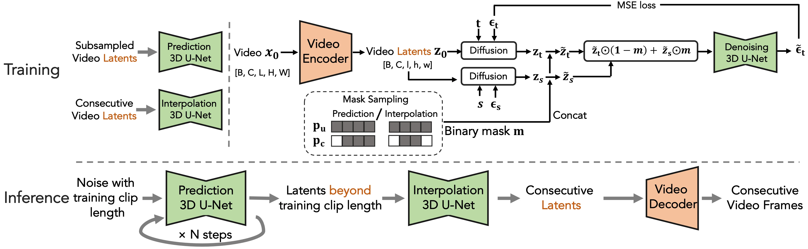
视频表示：同时压缩空间与时间
令干净视频为 \(X_0\in\mathbb R^{H\times W\times F\times3}\)。编码器与解码器分别为 \(\mathcal E,\mathcal D\)，得到 #He-2022-LVDM
其中 \(h=H/f_s\)、\(w=W/f_s\)、\(\ell=F/f_t\)。论文采用空间下采样 \(f_s=8\)、时间下采样 \(f_t=4\)。例如，16帧、256×256的视频在网格上对应4个32×32的潜时间位置；完整元素数量还要乘潜通道数 \(c\)。因此，后文的“潜帧”不应简单理解为某一张原始 RGB 帧的一一编码。 #He-2022-LVDM
这不是独立逐帧运行二维图像编码器，而是使用三维卷积的视频自编码器。原文沿用 repeat padding 处理时间边界，意在改善时间平移的一致性。它仍有有限感受野和边界处理，不能据此宣称任意分段解码都必然无缝。 #He-2022-LVDM
自编码器先单独训练，其重建部分包含像素均方误差和 LPIPS 感知损失，另加对抗损失改善模糊。用教学记号概括为 #He-2022-LVDM
这里 \(\lambda_p,\lambda_a\) 仅用于表示各项的组合权重，不给出原文未披露的取值；判别器与编码/解码网络采用对抗优化。自编码器训练完成后冻结，再训练潜空间扩散网络。 它不是先把视频变成离散码本索引，再在整数索引上加高斯噪声；扩散处理的是连续潜变量。 #He-2022-LVDM
基础模型：仍然学习已知噪声
在潜空间使用标准 DDPM 加噪边际： #He-2022-LVDM
这里 \(t\) 是扩散噪声时刻，潜帧位置用 \(i\) 表示。网络目标仍是预测加入的噪声，把原文单样本平方误差写成期望形式为 #He-2022-LVDM
所以 LVDM 没有为了生成长视频而改成预测一条新速度场；它改变了表示空间、条件接口和长序列生成组织。 #He-2022-LVDM
去噪骨干是时空因子化的三维 U-Net。局部空间卷积使用1×3×3卷积核，在部分层加入时间注意力，空间与时间注意力分开计算；扩散时间通过自适应 Group Normalization 调节特征。原文比较联合时空注意力后认为它增加复杂度、没有明显收益，有时还有斑点伪影，因而默认采用分解形式。 #He-2022-LVDM
条件掩码：同一窗口里保留过去、预测未来
基础模型一次生成的长度受训练窗口约束。要续写，需要告诉网络哪些潜帧已知，哪些仍要生成。令 \(M^i=1\) 表示第 \(i\) 个潜时间位置是条件，\(M^i=0\) 表示待预测。先不考虑条件扰动，输入可清楚地写成 #He-2022-LVDM
\(M\) 在空间上广播，作为额外通道告知网络“哪些位置已经给定”。已知位置提供干净潜变量，未知位置提供当前噪声时刻的状态；不是把已知帧也当作未知噪声重新画一遍。 #He-2022-LVDM
三种输入方式对应不同任务： #He-2022-LVDM
| 掩码方式 | 给网络的信息 | 要生成的内容 |
|---|---|---|
| 全为0 | 没有给定潜帧 | 整个短片段 |
| 前缀为1，后续为0 | 已有的过去潜帧 | 后面的潜帧 |
| 间隔位置为1，中间为0 | 稀疏潜时间锚点 | 锚点之间的潜帧 |
这些能力需要通过相应掩码和训练片段学习， 不是一个只做无条件训练的模型在推理时随便加上掩码就自动获得 。原文先训练无条件基础模型，再从其权重继续训练预测与插值模型；每个模型中结合无条件与对应条件任务。 #He-2022-LVDM
有掩码时，噪声回归的输入变为 \(\epsilon_\theta(\widetilde U_t,t)\)，标签仍来自人为加入的高斯噪声。主文没有把已知/未知位置的损失掩码、归一化方式与额外权重完整写成公式，因此不能据其简写断言二者都以同一权重训练，也不能宣称条件位置另有一项专门的重建损失。 #He-2022-LVDM
层次生成：先走稀疏骨架，再补中间
直接续写时，每生成一段，就把最后一些潜帧作为下一窗口的条件，再从新噪声生成后续潜帧。第一段外观有一点偏差，下一段就可能把偏差当成真实上下文；这样反复使用模型自己的输出，会逐渐偏离训练时的真实条件分布。 #He-2022-LVDM
LVDM 的层次方法先用时间稀疏的潜序列训练预测模型，让有限窗口覆盖更长的真实时间；生成出长的稀疏序列后，再由另一个插值扩散模型补中间潜帧。插值器看到相邻时间锚点，可以同时参考左右状态，而不只是盲目向未来外推。 #He-2022-LVDM
为说明它减少了什么，用 \(\ell\) 表示窗口潜帧数、\(k\) 表示重用前缀数，每个预测窗口增加 \(\ell-k\) 个潜帧。若希望覆盖 \(N\) 个连续潜时间位置，直接续写所需窗口数约为 #He-2022-LVDM
若预测阶段采用潜时间步幅 \(r\)，只需先生成约 \(N/r\) 个稀疏锚点，再插值回密集网格；相应的顺序预测窗口数量会减少。这是帮助理解的计数，不是原文指定的固定 \(r\) 或完整开销公式。 #He-2022-LVDM
减少的是沿视频时间不断续写的次数，不是一次扩散采样中必须执行的去噪次数。预测器和插值器都要运行扩散采样，补帧也有成本，因此层次设计不自动等于整体运行时间按 \(r\) 倍缩短。它的主要意图是让更长时间范围先获得锚点，降低完全依赖上一局部窗口造成的累积漂移。 #He-2022-LVDM
条件扰动与引导：应对不完美的历史
层次组织能减少续写次数，但还不能消除“训练看真实过去，推理看自己生成的过去”的差异。LVDM 因而对条件潜帧也加入少量噪声，使预测器在训练时就接触不完美条件。令 \(s\) 为条件噪声时刻： #He-2022-LVDM
完整输入变为 #He-2022-LVDM
\(t\) 控制待生成位置当前有多吵，\(s\) 控制已知条件允许被扰动多少；它们不是视频播放的前后两帧。训练时限制 \(s\) 不要太大，以免条件被完全毁掉；推理时使用固定的条件噪声级别。这里的“固定”指噪声强度，不意味着所有窗口必须复用同一份随机噪声。 #He-2022-LVDM
直觉是让网络不要过度依赖历史中的细小细节，从而更能容忍生成条件的误差。不过，加噪误差不等于所有真实生成错误；物体身份错了、动作顺序错了，不能保证靠这一训练增强自动修复。 #He-2022-LVDM
论文另使用与 CFG 同形式的估计组合： #He-2022-LVDM
\(\epsilon_c\) 是给定历史潜帧时的预测，\(\epsilon_u\) 是无条件分支预测。此处条件是历史视频，不是文本类别。虽然原文称其为“无条件引导”，公式仍沿条件与无条件预测的差方向外推；对于正的 \(w\)，不能理解为对两者做正权重平均，或者单纯增加无条件分支的占比。噪声预测可按加噪尺度换算为 score，但不是直接将这两个噪声向量当作未经缩放的 score。 #He-2022-LVDM
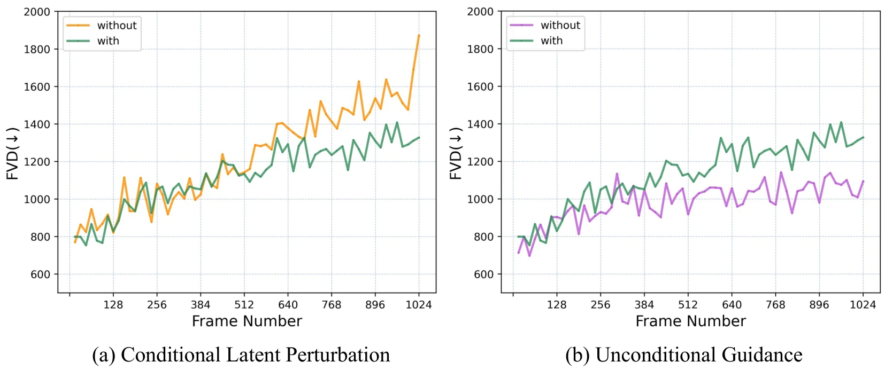
图7(a)支持条件扰动缓解后期退化，尤其是超过512帧以后；但图7(b)的绿色“with”曲线高于紫色“without”，不能直接作为引导有效的证据。主文却称该引导缓解退化，这里存在图文不一致，仅凭这份论文不能确定是否是图例、实验设置或结论表述的问题。因此保留方法与冲突，不将引导写成已经得到一致验证的提升。 #He-2022-LVDM
采样：从噪声生成锚点，再延展与插值
整个生成过程可以依次理解为： #He-2022-LVDM
- 在没有历史的首个窗口，从高斯潜噪声生成第一组潜帧。
- 取已有序列末尾的潜帧作为条件，设置前缀掩码；未知位置仍从高斯噪声开始，逐步去噪得到下一组潜帧。
- 重复第二步，得到超过训练窗口长度的稀疏序列。已有潜帧可以接受小幅条件扰动，但不会因此变成需要重新保存的整段视频。
- 使用插值模型，把稀疏锚点作为已知条件，在间隔内采样中间潜帧。
- 用冻结的视频解码器将连续潜序列恢复为像素视频。
对未知位置，若使用确定性 DDIM，可以用前文公式说明一次 \(t\to u\)、\(u<t\) 的更新： #He-2022-LVDM
每次网络调用仍要按掩码提供条件。这里是DDIM步骤的教学展开，不是宣称全文所有实验都采用这一确定性设置：原文长视频比较明确把星号方案标为100步DDIM，其他曲线不能全都替换成相同配置。主文的反向高斯方差记号也不够规范，本节不把它简写出的 \(\beta_t^2I\) 当作所有采样器的统一配置。 #He-2022-LVDM
注意这段流程有三种不同的“步数”：沿扩散时间去噪的步数、沿视频时间续写的窗口数，以及潜空间到像素空间的时间上采样。增加一个不等于增加另一个，1024帧也不意味着执行1024个去噪步骤。 #He-2022-LVDM
实验：画面质量与长程稳定性分别检查
主要定量实验在UCF-101、Sky Time-lapse和Taichi上进行无条件生成，训练分辨率256×256，不使用类别或文字标签。Taichi用间隔4帧抽样，其他数据一般间隔1帧；UCF-101与Taichi使用全数据集，Sky只用训练划分。 #He-2022-LVDM
原论文Table1的完整短视频比较如下。FVD和KVD分别比较视频特征分布的Fréchet距离与核距离，越低越好；“—”表示未报告。 #He-2022-LVDM
| 数据集 | 分辨率 | 方法 | FVD16 ↓ | KVD16 ↓ |
|---|---|---|---|---|
| Sky | 128×128 | MoCoGAN-HD | 183.6 ± 5.2 | 13.9 ± 0.7 |
| Sky | 128×128 | DIGAN | 114.6 ± 4.9 | 6.8 ± 0.5 |
| Sky | 128×128 | TATS | 132.6 ± 2.6 | 5.7 ± 0.3 |
| Sky | 128×128 | Long-video GAN | 107.5 | — |
| Sky | 256×256 | Long-video GAN | 116.5 | — |
| Sky | 256×256 | LVDM | 95.2 ± 2.3 | 3.9 ± 0.1 |
| UCF-101 | 64×64 | MCVD | 1143 | — |
| UCF-101 | 128×128 | TGAN-v2 | 1209 ± 28 | — |
| UCF-101 | 128×128 | DIGAN* | 577 ± 21 | — |
| UCF-101 | 128×128 | TATS | 420 ± 18 | — |
| UCF-101 | 256×256 | MoCoGAN-HD* | 700 ± 24 | — |
| UCF-101 | 256×256 | LVDM* | 372 ± 11 | 27 ± 1 |
| Taichi | 128×128 | MoCoGAN-HD | 144.7 ± 6.0 | 25.4 ± 1.9 |
| Taichi | 128×128 | DIGAN | 128.1 ± 4.9 | 20.6 ± 1.1 |
| Taichi | 128×128 | TATS | 94.6 ± 2.7 | 9.8 ± 1.0 |
| Taichi | 256×256 | DIGAN | 156.7 ± 6.2 | — |
| Taichi | 256×256 | LVDM | 99.0 ± 2.6 | 15.3 ± 0.9 |
根据原论文Table1完整整理，保留全部方法和分辨率。星号表示使用包含测试划分的全数据训练，LVDM在UCF-101上也是这个设置。短视频评估使用2048个真实与生成16帧片段，LVDM结果报告10次运行的均值和标准差；基线主要转录自原论文，不代表全部在本研究中统一重跑。 #He-2022-LVDM
这张表支持LVDM在多个数据和分辨率设置下有竞争力，但不能忽略跨分辨率和训练划分差异。例如Taichi的128×128 TATS在FVD和KVD上都比256×256 LVDM低，不能概括为所有设置全面领先。 #He-2022-LVDM
原论文Table2另控制近似参数规模、训练时间4.5天与8张V100，比较像素空间扩散： #He-2022-LVDM
| 方法 | 生成状态元素数 | 参数量 | 单采样步耗时 | FVD16 ↓ | KVD16 ↓ |
|---|---|---|---|---|---|
| VDM | 197k | 445M（397+48） | 4.9秒（3.3+1.6） | 1396 | 116 |
| MCVD | 786k | 441M | 3.0秒 | 2460 | 148 |
| LVDM | 16k | 437M（418+19） | 0.8秒 | 552 | 42 |
根据原论文Table2完整整理。 #He-2022-LVDM VDM使用低分辨率生成加空间超分的两级系统；括号中的加号保留原表的模型拆分。0.8秒是一次采样步，不是整个视频的端到端生成时间。这里LVDM的FVD为552，与Table1的372属于不同训练比较设置，不能混用。
对长视频，论文没有只给一个1024帧总分，而是从512个生成样本中，按不重叠的16帧窗口逐段计算FVD，观察从开头到结尾是否退化。它检查的是后期局部片段分布，并不直接测量相隔数百帧的人物身份是否仍一致。 #He-2022-LVDM
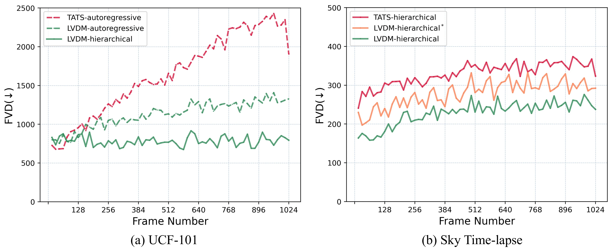
图6中，UCF-101的层次LVDM曲线比直接续写更平稳；Sky的层次方案也有较低FVD。不过TATS没有提供UCF-101的层次检查点，左图不能解释成与TATS层次版本的受控比较。长视频曲线只运行一次，原文没有逐点数值表与误差带，这里不从图上读出精确提升百分比。 #He-2022-LVDM
文本到视频扩展则另使用约200万WebVid子集与十亿量级模型，以Stable Diffusion初始化空间卷积和空间注意力，并将时间模块初始化为恒等映射。它展示了可迁移性，但不能把上述无条件FVD直接当作文本对齐或开放域文生长视频的成绩。 #He-2022-LVDM
小结与局限
LVDM把长视频问题组织成压缩、局部条件预测、稀疏骨架与插值、误差鲁棒性四个环节。它说明：一个固定窗口的扩散模型，可以通过专门的条件训练和重复调用生成更长序列；层次组织又能减少对前一个局部窗口的单向依赖。 #He-2022-LVDM
但“可以继续生成”不等于“任意长都保持正确”。历史仍有限，误差仍可能累积；稀疏锚点之间可能缺少复杂动作细节，插值器也不能保证补出正确动力学。视频自编码器还会损失信息，条件扰动不能替代身份约束，分段FVD无法证明整段故事、角色与物理关系长期一致。无条件引导的图文冲突也提醒我们，不能把每项提出的技巧都直接写成稳定有效的结论。 #He-2022-LVDM
当前主文未完整披露预测窗口与插值间隔、优化器、学习率、批量大小等全部配置，复现需继续核对官方实现；本节不补造统一默认值。它提供了长视频生成的重要组织思路，而不是已经解决全局记忆和长程因果一致性的完整系统。 #He-2022-LVDM
问题：局部续写看不到整段故事
逐段续写可以突破一次生成的窗口，却把“下一段是什么”交给已经生成的局部历史：前面画错了，后面会继续依赖这个错误；下一段又必须等上一段完成。质量上的误差累积和计算上的顺序依赖，是两个不同的问题。 #Yin-2023-NUWAXL
Yin、Wu等人在2023年3月提出的NUWA-XL，论文全名为 NUWA-XL: Diffusion over Diffusion for eXtremely Long Video Generation 。 #Yin-2023-NUWAXL 它把长视频改成一个从粗到细的生成树：先生成横跨全片的稀疏关键帧，再以相邻关键帧为两端，生成中间内容；对更小的时间区间重复这个过程。
这里的“粗”和“细”主要指时间间隔，不是先生成模糊像素再提高空间分辨率。全局模型先决定远处的几个时刻应该出现什么，局部模型再解释它们之间怎样发生变化。同一层不同区间的两端已经确定，因此可以并行填充；不同层之间仍有依赖。 #Yin-2023-NUWAXL
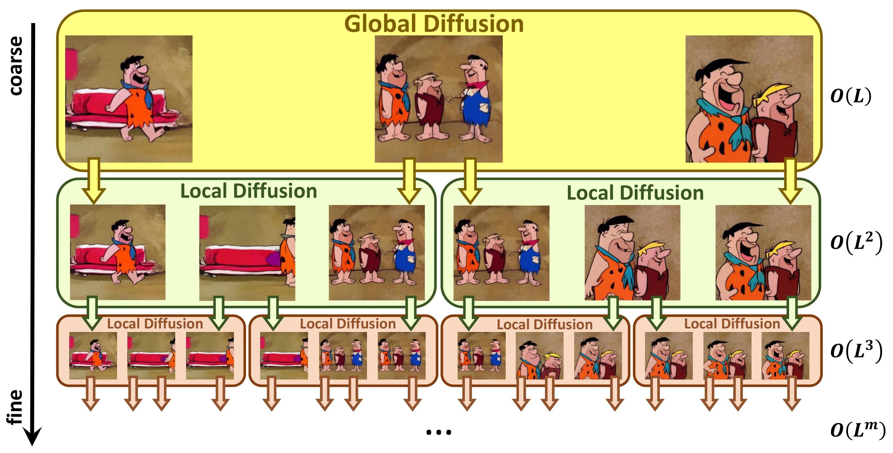
时间上，NUWA-XL早于VideoGen和VidRD；更早的LVDM则已探索层次预测与插值。NUWA-XL的重点是长时间跨度的训练、全局/局部扩散组织和同层并行，不是首次发现视频可以插帧。 #Yin-2023-NUWAXL
T-KLVAE：让图像潜空间适应时间
NUWA-XL先把视频压缩到连续潜空间。Temporal KLVAE（T-KLVAE，时间扩展的KL正则自编码器）以预训练图像KLVAE为基础，在空间卷积后加入时间卷积，在空间注意力后加入时间注意力；编码器和解码器都作相应扩展。 #Yin-2023-NUWAXL
原文这组形状保留\(L\)个时间位置，不能把LVDM的时间压缩率4直接搬过来。KLVAE中的KL指对潜变量分布施加KL散度正则；这仍是连续潜变量，不是离散码本索引。 #Yin-2023-NUWAXL
新增时间层怎样不立刻破坏图像预训练能力？时间卷积初始化为恒等映射：全部权重先置零，再将输入、输出同一通道的卷积核中心设为1： #Yin-2023-NUWAXL
这里用奇数卷积核宽度\(k\)表示原文的中心索引。初始化时，每个时间位置只读自身；随后训练再学习相邻帧如何参与重建。新增注意力的输出投影置零，使其初始残差贡献为零。恒等初始化不等于时间层一直冻结，它只是一个保留原图像模型行为的起点。 #Yin-2023-NUWAXL
论文说明自编码器目标沿用图像KLVAE，但没有在公开正文完整展开各损失权重、优化配置和冻结范围。因此本节不把“继承预训练空间模块”进一步写成“已确认只训练时间层”，也不指定原文没有明确给出的Stable Diffusion版本或时间压缩率。 #Yin-2023-NUWAXL
MTD：全局生成与两端补帧共用接口
基础生成模块叫Mask Temporal Diffusion（MTD，掩码时间扩散）。它接收三类条件：每个时间位置的文本、扩散时刻，以及可选的已知画面。 #Yin-2023-NUWAXL
令\(M_j=1\)表示该位置作为视觉条件。全局生成时，\(M\)全为0，没有给定帧；局部补帧时，只有首尾为1。先在像素域构造条件，再编码： #Yin-2023-NUWAXL
中间位置置零表示“未给定”，并不是要求生成黑画面；显式掩码用来区分缺失位置和真实黑色内容。由于编码器含时间运算，\(\mathcal E(M\odot V_0)\)也不应擅自替换成\(M\odot\mathcal E(V_0)\)。全零像素条件经过编码后，同样不必逐元素为零。 #Yin-2023-NUWAXL
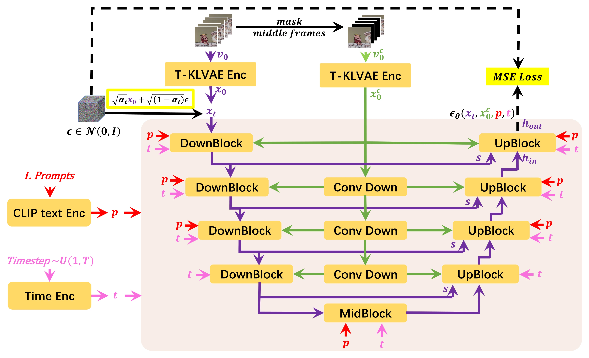
其扩散仍是标准DDPM路径。令\(\alpha_t=1-\beta_t\)、\(\bar\alpha_t=\prod_{s=1}^{t}\alpha_s\)，则 #Yin-2023-NUWAXL
原论文Equation 4将第二项系数印成\(1-\bar\alpha_t\)，与其Equation 3定义的高斯转移不一致；上式按该转移累积得到的标准差写出，原论文Figure 2的加噪框也使用了平方根系数。这项核对很重要：乘到标准高斯上的系数是标准差，不能直接用方差代替。 #Yin-2023-NUWAXL
用\(P\)表示\(L\)个位置的CLIP文本嵌入，原论文Equation 5的目标可以补全采样期望为 #Yin-2023-NUWAXL
这里将原文在模块内部使用的掩码\(M\)显式写进参数列表。监督标签仍是我们自己加入的噪声；全局与局部任务的区别主要在训练帧的时间跨度和给定条件，不是改成两种不同的预测量。 #Yin-2023-NUWAXL
原文目标没有写只在未知帧计算的损失掩码，因此不应将它改成仅对中间\(L-2\)帧回归，或自行指定首尾帧的特殊权重。网络知道两端，不等于它的训练loss只计算两端；要学会补中间，训练样本中的中间真值仍然提供监督。 #Yin-2023-NUWAXL
条件怎样进入U-Net
Mask 3D-U-Net保留空间卷积和空间注意力，另加时间卷积、时间注意力。以一个上采样块为例，先拼接跳跃连接，加入扩散时间嵌入，再执行空间/时间运算。 #Yin-2023-NUWAXL
视觉条件\(Z_0^c\)与掩码\(M\)经卷积映射得到逐位置的缩放和偏移。原文的两步注入可整理为 #Yin-2023-NUWAXL
这里\(W_c,B_c\)来自视觉潜变量，\(W_m,B_m\)来自掩码；\(W\)表示预测出的调制量，不是单独的固定缩放常数。生成调制量的卷积零初始化，使初始注入接近恒等操作。这种条件注入在不同分辨率的下采样块与上采样块中都存在。 #Yin-2023-NUWAXL
文本走另一条接口：每帧的视觉特征作为query，该时间位置的文本token作为key/value，执行cross-attention： #Yin-2023-NUWAXL
这是对原文Prompt Cross-Attention的标准展开，省略多头与输出投影。空间注意力处理单帧内部的位置；时间注意力沿帧序列处理各位置的时序关联。视觉两端通过多尺度调制注入，文本通过cross-attention注入，两者不能混成“都只是把条件接到输入上”。 #Yin-2023-NUWAXL
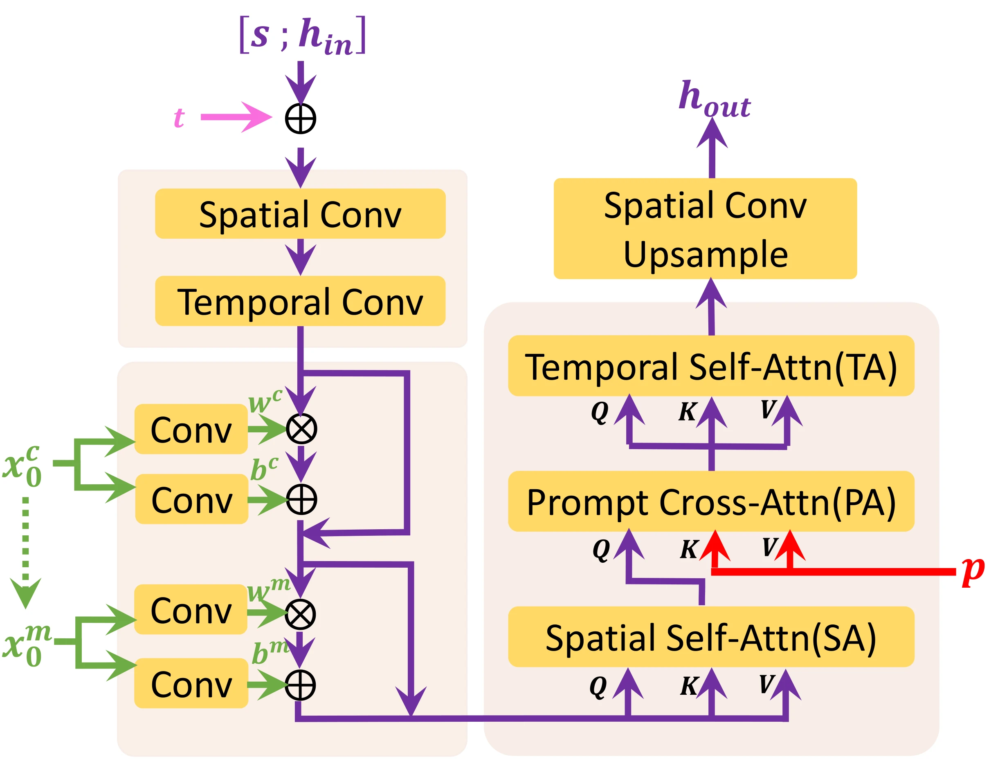
首尾帧在这里提供条件信息，而非数学上自动成为不可更改的输出。公开正文未详细说明每个采样步是否钳制首尾、以及最终拼接如何保留锚点；不能将条件注入本身当成逐像素边界严格相等的证明。 #Yin-2023-NUWAXL
层次展开：3376帧怎样得到
先看生成逻辑，再计算帧数： #Yin-2023-NUWAXL
- 全局扩散根据大时间间隔的\(L\)条提示，生成\(L\)个关键帧，覆盖目标视频的全时段。
- 对每一对相邻关键帧，取它们作为局部窗口的首尾，输入该区间更细时间位置的\(L\)条提示，生成中间\(L-2\)帧。
- 把新增帧也作为下一层的锚点，对更小的区间重复第二步。
因此，不是从一个粗关键帧“凭空决定所有未来”，而是让一组跨全片的锚点先建立全局约束，再逐层解决局部过渡。这里的文本本来就是按时间位置给定的一组提示；论文没有声称自动从一句用户指令生成完整分镜或密集字幕计划。 #Yin-2023-NUWAXL
对一个每层都完整展开、相邻窗口共享端点的生成树，令\(F_r\)为第\(r\)层之后的不重复帧数。首层\(F_1=L\)，每个相邻区间增加\(L-2\)帧，因此 #Yin-2023-NUWAXL
这是按原论文“相邻两端之间补帧”规则展开的计数推导；原文主要写为\(O(L^m)\)。当\(L=16,m=3\)时： #Yin-2023-NUWAXL
第一层有15个大区间，每个补14帧，得到\(16+15\times14=226\)帧；第二次补帧时有225个区间，再补\(225\times14\)帧，最终3376帧。 #Yin-2023-NUWAXL
这也说明“直接在3376帧长视频上训练”应如何理解：训练片段的时间跨度来自长视频，模型学习不同粗细层的稀疏帧关系，而不是一次把3376个连续画面全部送进一个16帧U-Net。 帧数并不自动给出视频秒数，后者还取决于帧率。 #Yin-2023-NUWAXL
上述是完整生成树的容量计数，不是原论文所有评测长度的精确执行记录。Table 1另报告16、256和1024帧；公开版没有把这些长度如何选取区间、裁切或调度完整展开，不能只凭3376这个数反推所有实验的具体实现。 #Yin-2023-NUWAXL
训练与采样：每一层都要学，也都要去噪
T-KLVAE先学习视频潜表示；MTD再学习全局或局部条件下的噪声预测。全局训练使用跨较大时间间隔的帧及对应文本，没有给定视觉帧；局部训练从更密集的时间位置取帧，把真实首尾作为条件，真实中间帧作为目标数据的一部分。 #Yin-2023-NUWAXL
局部能力需要这样的条件训练，不是普通文本到视频模型在推理时突然收到两张图就自然会插帧。论文沿用相同MTD结构构建全局和不同层的局部模型，但未充分披露各层权重是否共享、训练阶段的完整安排及全部冻结配置；结构一致不等于已经证实所有层共用一份参数。 #Yin-2023-NUWAXL
推理时，首层从高斯潜噪声生成稀疏关键帧；下层条件来自上层生成结果，而不是训练时的真实帧。用标准DDPM教学记号写一次条件去噪： #Yin-2023-NUWAXL
这是与前文DDPM一致的后验方差采样展开。原论文Equation 16直接将\(\widetilde\beta_t\)乘到标准高斯上，疑似再次混用了方差与标准差；这里展示标准DDPM写法，不把它冒充已核实的作者代码。论文没有完整披露实际采样步数、加速采样配置或CFG尺度，因此不能照搬VidRD的50步DDIM和CFG 10。 #Yin-2023-NUWAXL
最后解码各层生成结果，并按层次保留和填充时间位置。所有层都有自己的扩散采样；“Diffusion over Diffusion”说的是一个视频时间层次中的输出，再成为下一层扩散的条件，不表示在某个去噪步里递归启动无限多次去噪。 #Yin-2023-NUWAXL
这种设计缩短了局部单向历史链，但没有彻底消灭训练/推理差异：训练局部模型时的真实端点，与推理时上层生成的端点仍可能不同。若全局锚点已经画错，下层也可能继承错误。因此，原文“消除训练—推理鸿沟”的说法更宜理解为缓解只看短跨度训练数据的问题，而不是对任意生成误差的保证。 #Yin-2023-NUWAXL
并行到底加速了什么
顺序续写时，片段B依赖A，C又依赖B，必须沿视频时间依次完成。NUWA-XL在父层完成后，该层各个区间已经各有两端，可并行调度生成；它们不必等待左边区间先画完。具体怎样映射到GPU、采用多少并行任务，论文没有报告。 #Yin-2023-NUWAXL
用一个理想化计数说明：设每个MTD窗口耗时\(\tau\)，一共\(m\)层，每层区间都能同时运行，关键依赖链的耗时约为\(m\tau\)。但完整展开的窗口调用数仍约为 #Yin-2023-NUWAXL
这只是相同窗口耗时、足够并行资源下的教学模型，忽略解码、调度与通信。它表明层数少不等于总计算量少：同层窗口增多，需要更多并行容量；资源不足时仍要分批执行。模型也不是先一口气生成所有层，再统一去噪。 #Yin-2023-NUWAXL
原文“1024帧从453秒降到26秒”的比较针对其报告的FDM*与128分辨率NUWA-XL；不是把同一个模型换个采样公式后自动加速。摘要称硬件设置相同，限制章节也承认需要足够GPU支持，但正文没有给出足以复现实测并行度的完整设备数量与调度配置。因此应保留实验数值及范围，不宣传成任意单卡上的固定加速倍数。 #Yin-2023-NUWAXL
实验：长视频质量与速度分开看
论文构建FlintstonesHD，以《摩登原始人》166集动画为来源，原视频平均约38000帧、1440×1080；使用GIT2生成逐帧描述并人工过滤部分错误。数据源分辨率不等于模型输出分辨率，主表评测的是128和256分辨率，也不是开放域真人长视频的验证。 #Yin-2023-NUWAXL
Avg-FID衡量生成帧的图像特征分布；B-FVD-16将长视频分成16帧块，平均比较视频特征分布。后者能观察局部片段质量随总长度怎样变化，但不能直接证明相隔上千帧的人物身份、事件因果或叙事始终一致。 #Yin-2023-NUWAXL
| 总帧数 | 方法 | 分辨率 | Avg-FID ↓ | B-FVD-16 ↓ | 生成耗时（秒）↓ |
|---|---|---|---|---|---|
| 16 | Phenaki | 128 | 40.14 | 544.72 | 4 |
| 16 | FDM* | 128 | 34.47 | 532.94 | 7 |
| 16 | NUWA-XL | 128 | 35.95 | 520.19 | 7 |
| 16 | NUWA-XL | 256 | 32.66 | 580.21 | 15 |
| 256 | Phenaki | 128 | 43.13 | 573.55 | 65 |
| 256 | FDM* | 128 | 38.28 | 561.75 | 114 |
| 256 | NUWA-XL | 128 | 35.68 | 542.26 | 17 |
| 256 | NUWA-XL | 256 | 32.05 | 609.32 | 32 |
| 1024 | Phenaki | 128 | 48.56 | 622.06 | 259 |
| 1024 | FDM* | 128 | 43.24 | 618.42 | 453 |
| 1024 | NUWA-XL | 128 | 35.79 | 572.86 | 26 |
| 1024 | NUWA-XL | 256 | 32.07 | 642.87 | 51 |
根据原论文Table 1完整整理，将帧数、方法和分辨率展开为行。 #Yin-2023-NUWAXL Phenaki采用自回归模型上的自回归组织，FDM*采用扩散模型上的自回归组织；星号表示作者给原本不支持文本的FDM补了文本接口，不是未经修改的官方FDM。
有三个结论应分别读： #Yin-2023-NUWAXL
- 帧外观退化较小：NUWA-XL 128的Avg-FID从16帧35.95到1024帧35.79，较平稳。
- 运动片段质量仍会退化：同设置B-FVD-16从520.19升至572.86，因此不能说视频越长所有指标都不变。256分辨率版本的B-FVD也没有全面优于128版。
- 并行下的墙钟时间改善明显：1024帧相对FDM*的耗时下降为\((453-26)/453\approx94.26\%\)，约17.4倍时间比；相对Phenaki的259秒则是另一比较，不能混称同一个加速百分比。
接着看Table 2的四组完整消融。首先是自编码器重建，不是扩散模型生成质量： #Yin-2023-NUWAXL
| 自编码器 | 时间层初始化 | FID ↓ | FVD ↓ |
|---|---|---|---|
| KLVAE | 无时间层 | 4.71 | 28.07 |
| T-KLVAE-R | 随机 | 5.44 | 12.75 |
| T-KLVAE | 恒等 | 4.35 | 11.88 |
根据原论文Table 2(a)完整整理。 #Yin-2023-NUWAXL 时间建模显著改善重建视频的FVD；随机初始化的图像FID反而比原KLVAE高，因此保留图像起点的初始化策略也有意义。这些数值不能拿来与主表生成FVD直接比较。
| 视觉条件接口 | 多尺度注入MI | 编码/解码路径对称注入SI | FID ↓ | FVD ↓ |
|---|---|---|---|---|
| MTD w/o MS | 否 | 否 | 39.28 | 548.90 |
| MTD w/o S | 是 | 否 | 36.04 | 526.36 |
| MTD | 是 | 是 | 35.95 | 520.19 |
根据原论文Table 2(b)完整整理。 #Yin-2023-NUWAXL MI表示在多个空间分辨率注入条件，而非只在最高分辨率注入；SI表示U-Net下采样和上采样两侧都注入，而非只注入上采样侧。这里的“编码/解码路径”指U-Net，不是T-KLVAE。主要收益来自多尺度，双侧注入带来进一步较小改善。
| 模型 | 层次深度m | 16帧B-FVD-16 ↓ | 256帧B-FVD-16 ↓ | 1024帧B-FVD-16 ↓ |
|---|---|---|---|---|
| NUWA-XL-D1 | 1 | 527.44 | 697.20 | 719.23 |
| NUWA-XL-D2 | 2 | 516.05 | 536.98 | 684.57 |
| NUWA-XL-D3 | 3 | 520.19 | 542.26 | 572.86 |
根据原论文Table 2(c)完整整理，固定\(L=16\)。 #Yin-2023-NUWAXL 深度3对1024帧更有帮助，但16和256帧并非都比深度2好；不能概括成层次越深，所有长度都单调改善。
| 模型 | 局部窗口L | 16帧B-FVD-16 ↓ | 256帧B-FVD-16 ↓ | 1024帧B-FVD-16 ↓ |
|---|---|---|---|---|
| NUWA-XL-L8 | 8 | 569.43 | 673.87 | 727.22 |
| NUWA-XL-L16 | 16 | 520.19 | 542.26 | 572.86 |
| NUWA-XL-L32 | 32 | OOM | OOM | OOM |
根据原论文Table 2(d)完整整理，固定\(m=3\)；OOM表示显存不足。 #Yin-2023-NUWAXL 从8到16更好，不等于已经验证32帧更好；后者连评测结果都未完成。这也是不能无限增大一次生成窗口的直接证据。
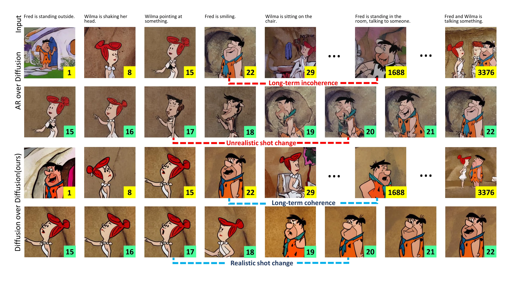
这张图提供跨远距离帧的案例，但只是部分样本，不能代替身份跟踪、全局事件评估或开放域实验。逐帧描述也主要说明看到了什么，不自动构成准确的运动因果标注。 #Yin-2023-NUWAXL
小结与局限
NUWA-XL把长视频生成组织成长跨度关键帧、两端条件补帧、递归时间细化与同层并行。它仍训练噪声预测扩散模型；创新更多发生在视频时间结构和训练跨度，而非将噪声换成新的预测目标。 #Yin-2023-NUWAXL
它的不足也很明确：效果主要验证于单一动画域；密集文本和长视频数据的准备成本高；全局锚点错误会约束后续生成；局部训练的真实端点与推理生成端点仍有分布差异；并行加速需要资源支撑。局部块FVD还不足以衡量全局身份和情节因果。更长的生成树提供了表达长度的能力，不等于自动获得同等长度的可靠故事理解。 #Yin-2023-NUWAXL
问题：先画清楚，再让画面动起来
LVDM主要处理固定窗口与长时间续写。VideoGen关注另一种分工： 能否先让成熟的文生图模型确定清晰的视觉内容，再让视频模型学习这些内容怎样运动？ 仅复用图像模型权重，视频模型仍要同时决定主体外观、背景纹理和时间变化；有限的文本—视频数据不一定能把这些事情都学好。 #Li-2023-VideoGen
Li等人提出的 VideoGen: A Reference-Guided Latent Diffusion Approach for High Definition Text-to-Video Generation ，用Stable Diffusion从文本生成一张参考图，再把参考图与文字一起交给视频扩散模型。首次公开于2023-09-01，本节依据2023-09-07的arXiv v2。 #Li-2023-VideoGen
它把系统拆为四步：参考图、三级潜空间视频扩散、基于运动场的时间超分，以及增强的视频解码器。这里先明确范围： 这篇主要研究高清、平滑的视频生成；其时间超分是补帧，不是LVDM那样不断预测新时间区间的长视频续写。 帧数增加与内容时长延伸，需要分别讨论。 #Li-2023-VideoGen
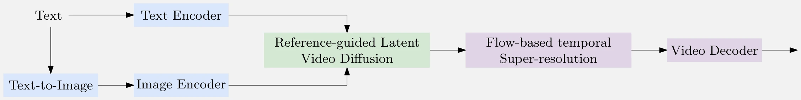
参考条件：保留空间细节，而非只提供语义
给定提示词 \(c\)，先从冻结的文生图模型采样参考图 \(R\)，再用Stable Diffusion自编码器的图像编码器提取潜变量： #Li-2023-VideoGen
这里有两个不同接口。\(e_c\) 是文字的语义表示；\(r\) 是能够支持图像重建的空间潜变量网格，保留更具体的外观与布局信息。它不是先通过unCLIP prior预测CLIP图像嵌入，也不是只给视频模型一个全局图像语义向量。 #Li-2023-VideoGen
参考图怎样进入网络？假设视频有 \(F\) 个潜时间位置，构造参考条件序列 #Li-2023-VideoGen
再将 \(C_R\) 与带噪视频 \(Z_t\) 沿 通道维 拼接。于是，只有首帧输入带有非零参考条件，其他位置的该组通道补零；时间卷积与时间注意力负责把首帧外观信息传给后续位置。零值指参考条件通道，不是把后续帧的带噪状态清零。 #Li-2023-VideoGen
文字仍通过cross-attention进入各级视频去噪器，FPS嵌入则说明目标时间采样密度。参考图提供“具体画成什么样”，文本继续指定“应该发生什么”，FPS提供时间尺度条件。 三者不能互相替代。 #Li-2023-VideoGen
这与LVDM的已知帧替换也有区别：VideoGen把参考潜变量作为额外输入，不是在每个反向步骤强制把生成首帧覆盖成参考潜变量。因此它不是对首帧像素的严格保真约束；后续帧也可以偏离参考图中的细节。 #Li-2023-VideoGen
训练时不用先为每条视频字幕生成一张图，而是直接取真实视频的第一帧作为参考；推理时再换成文生图模型产生的参考图。这避免为训练数据额外生成参考图，也留下真实首帧与生成参考之间的分布差异。 #Li-2023-VideoGen
空间级联：先确定结构，再补空间细节
VideoGen先生成16帧、16×16的潜序列，再由两个空间超分扩散模型依次提高到32×32与64×64。三级过程的时间长度均为16，变化的是潜空间网格大小。 #Li-2023-VideoGen
| 阶段 | 潜空间分辨率 | 除文本、参考图、FPS外的输入条件 |
|---|---|---|
| 基础视频扩散 | 16×16 | 无前一级视频条件 |
| 第一级空间超分 | 32×32 | 前一级潜序列双线性上采样2倍 |
| 第二级空间超分 | 64×64 | 前一级潜序列双线性上采样2倍 |
在各级中，参考图也编码为与当前潜网格匹配的空间条件。超分网络把上一级结果上采样后与当前带噪潜变量拼接；它不是直接对上一级结果做一次普通插值就结束，还要学习从噪声中恢复更细的潜表示。 #Li-2023-VideoGen
为说明条件角色，记第 \(j\) 级真实视频潜变量为 \(Z_0^{(j)}\)，加噪为 #Li-2023-VideoGen
用前文标准LDM噪声回归形式，可以把它的条件任务解释为 #Li-2023-VideoGen
其中 \(U^{(j)}\) 表示后两级使用的低分辨率条件，基础级没有这一项。这是为解释条件依赖而采用的标准LDM教学形式；论文正式正文没有独立列出完整loss公式、时间权重或三级loss的联合权重，不能把它当作原论文逐字给出的训练目标。 已有图像编码器提供干净潜变量，参考条件帮助预测，二者都不是替代已知噪声标签。 #Li-2023-VideoGen
网络沿用空间、时间分解的思路：每个二维空间卷积之后增加一维时间卷积，空间注意力之后增加时间注意力。基础级用Stable Diffusion初始化空间参数，新增时间模块初始化为恒等映射；第二级从训练好的第一级初始化，第三级再从训练好的第二级初始化。复用初始化与冻结参数是两件事，不能由此推断新增训练只更新时间模块。 #Li-2023-VideoGen
时间超分：运动对齐后再去噪细化
关键潜帧已经生成，为什么不直接对相邻潜变量求平均补中间？因为物体会移动。左帧的鞋在位置A，右帧的鞋在位置B，直接混合往往得到两只半透明的鞋，而不是位于中间的一只鞋。 #Li-2023-VideoGen
VideoGen先估计潜空间中的运动位移，再沿位移搬移两侧潜特征，得到中间位置的粗条件；随后用条件去噪扩散网络细化。这里的flow是空间位置之间的运动对应场，并非Flow Matching里沿生成时间搬运概率分布的速度场。 #Li-2023-VideoGen
例如，用反向采样约定说明一次warp： #Li-2023-VideoGen
\(u\) 为输出网格坐标，\(F(u)\) 指向输入网格的采样位移。非整数位置需要插值。这个式子只说明“按位移读取特征”的含义，不替论文补造具体的遮挡融合权重或双向流组合算法。 #Li-2023-VideoGen
运动网络由IFRNet改造，输入改为潜变量。训练时用预训练IFRNet在像素空间得到运动场，再调整到潜网格尺度，作为运动监督。它是已有模型提供的伪标签，不是数据集直接标注的精确真实运动。 #Li-2023-VideoGen
细化扩散模型的目标潜变量来自较高FPS视频的中间真实帧；低FPS输入经运动对齐得到条件。训练因此不只学会“搬移已有纹理”，也学习补出粗变形中缺失的细节。 #Li-2023-VideoGen
最后还将粗变形结果的低频部分，与细化结果的高频部分组合。若 \(P\) 表示低频提取算子，可以把这种分工教学性地表示为 #Li-2023-VideoGen
其中 \(C_\tau\) 为粗变形结果，\(Y_\tau\) 为去噪细化结果。这不是论文指定的滤波器实现公式；主文没有展开 \(P\) 的全部配置。直觉是让整体结构继续贴近运动对齐条件，而把更细的纹理交给生成模型，减少自由生成引起的漂移。 #Li-2023-VideoGen
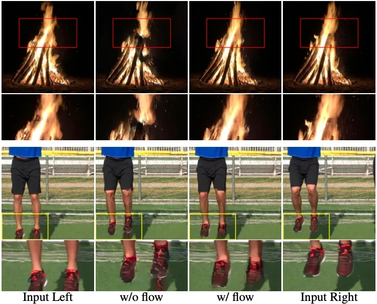
论文重复三次2倍时间超分，总体提高8倍时间密度。但插入中间帧不会自动产生锚点区间以外的新事件。若输出帧率随帧数一起提高，覆盖时长大致不变；若固定帧率播放，则会改变动作速度。主文没有给出一套足以把这一过程确定为长时续写的固定输出FPS与时长设置。 #Li-2023-VideoGen
视频解码：把无字幕高清数据用于最后一段
即使潜序列已经连续，逐帧图像解码也可能带来纹理闪烁。VideoGen因此把Stable Diffusion的图像解码器扩展为视频解码器：二维卷积后增加一维时间卷积，空间注意力后增加时间注意力，让恢复像素时也能读取邻帧信息。 #Li-2023-VideoGen
训练使用冻结的图像编码器提取潜变量；先对输入视频进行加噪、模糊、压缩等退化，再编码，目标仍为原始清晰视频。用映射关系表达就是 #Li-2023-VideoGen
\(\mathcal A\) 表示退化。它让解码器不只恢复干净编码，也适应不完美潜表示。原文没有在正式正文中完整列出这一训练的重建、感知或对抗损失权重，这里不擅自填入一套固定配方。 #Li-2023-VideoGen
时间超分与视频解码不需要文字标签，因而可使用更多无字幕高质量视频。论文从2000余个4K、60FPS的YouTube视频提取约40000个、每个100帧的片段用于这两部分；参考引导的三级扩散模型则使用WebVid-10M文本—视频对。无配对数据的利用是模块分工的结果，并非整个系统不需要配对视频训练。 #Li-2023-VideoGen
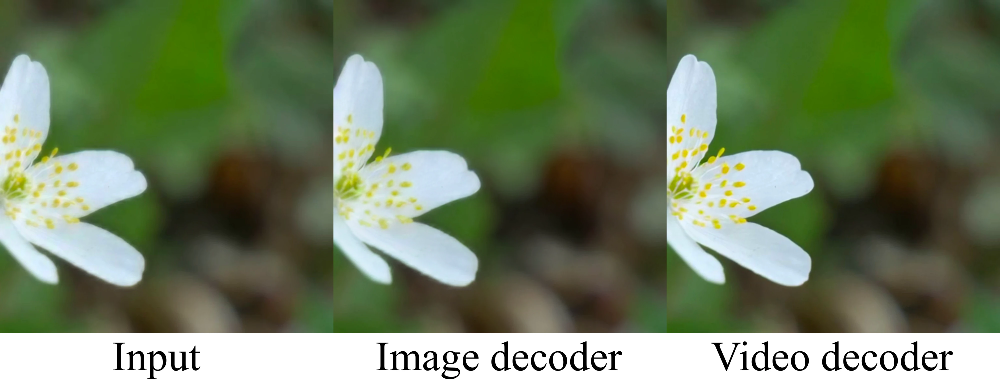
训练与采样：条件、数据和成本分别看
| 模块 | 训练材料与输入 | 参数使用方式 |
|---|---|---|
| 文生图模型、文本编码器、图像编码器 | 已有预训练模型 | 冻结，不为本方案重新训练 |
| 三级参考引导视频扩散 | WebVid-10M；真实首帧作参考 | 复用图像或前一级参数初始化后训练 |
| 潜空间运动估计与补帧细化 | 无字幕高FPS视频；IFRNet伪运动标签 | 独立训练相应模块 |
| 视频解码器 | 无字幕视频的退化输入与原始清晰目标 | 复用图像解码器初始化后训练 |
论文报告所有实验在64张A100-80G上进行；没有完整披露各模块独立的训练时长、批量大小、学习率与更新参数比例。“利用预训练图像模型”不等于训练便宜到只需一个小适配器，也不意味着推理只运行一个视频网络。 #Li-2023-VideoGen
采样时先生成参考图，再用文字、参考和FPS条件生成16帧低空间分辨率潜序列；随后两次空间扩散超分，可选三次时间补帧，最后视频解码。每个扩散阶段都有自己的多步去噪成本，参考图本身也要采样。 #Li-2023-VideoGen
主文未给出足够完整的固定采样器、去噪步数与CFG配置，不能将前节LVDM的100步DDIM照搬过来。按64×64潜网格与8倍空间解码可推得512×512像素输出，但这是结构尺寸推算；正式定量评估使用16帧、256×256视频，不能把下表直接解释成高清补帧后的完整输出质量。 #Li-2023-VideoGen
实验：参考图改善了什么
先看原论文Table 3的参考条件消融： #Li-2023-VideoGen
| 设置 | MSR-VTT CLIPSIM ↑ | UCF-101零样本IS ↑ |
|---|---|---|
| 无参考图 | 0.2534 | 26.64 ± 0.47 |
| 有参考图 | 0.3127 | 71.61 ± 0.24 |
根据原论文Table 3完整整理。 #Li-2023-VideoGen 此处CLIPSIM采用随机选取的1000条测试提示；IS反映生成视频在分类特征中的可辨认性与类别覆盖。结果支持参考图对内容与文本对齐的帮助，不能单靠这两个指标证明运动动力学学得更准确。这也不意味着参考图分支严格实现了内容与运动的独立分解。
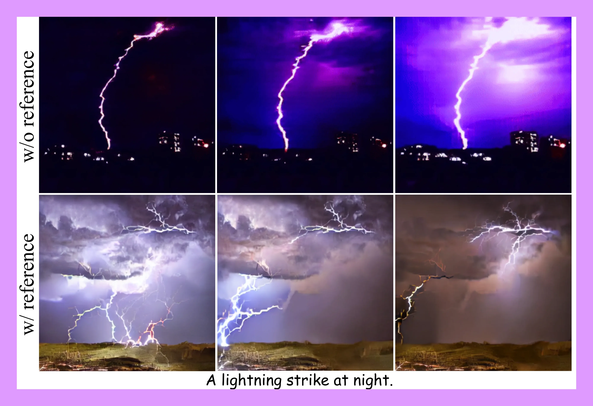
原论文Table 1在UCF-101上的完整结果分为两组。Pretrain与Class保留原表标识，分别表示是否采用预训练及类别条件；这些标识不意味着各方法采用相同训练数据和预算。 #Li-2023-VideoGen
| 零样本方法 | Pretrain | Class | 分辨率 | IS ↑ | FVD ↓ |
|---|---|---|---|---|---|
| CogVideo（中文） | Yes | Yes | 480×480 | 23.55 | 751.34 |
| CogVideo（英文） | Yes | Yes | 480×480 | 25.27 | 701.59 |
| Make-A-Video | Yes | Yes | 256×256 | 33.00 | 367.23 |
| VideoGen | Yes | Yes | 256×256 | 71.61 ± 0.24 | 554 ± 23 |
| 原表Fine-tuning组方法 | Pretrain | Class | 分辨率 | IS ↑ | FVD ↓ |
|---|---|---|---|---|---|
| TGANv2 | No | No | 128×128 | 26.60 ± 0.47 | — |
| DIGAN | No | No | — | 32.70 ± 0.35 | 577 ± 22 |
| MoCoGAN-HD | No | No | 256×256 | 33.95 ± 0.25 | 700 ± 24 |
| CogVideo | Yes | Yes | 160×160 | 50.46 | 626 |
| VDM | No | No | 64×64 | 57.80 ± 1.3 | — |
| LVDM | No | No | 256×256 | — | 372 ± 11 |
| TATS-base | Yes | Yes | 128×128 | 79.28 ± 0.38 | 278 ± 11 |
| Make-A-Video | Yes | Yes | 256×256 | 82.55 | 81.25 |
| VideoGen | Yes | Yes | 256×256 | 82.78 ± 0.34 | 345 ± 15 |
根据原论文Table 1完整整理，分组名称沿用原表。 #Li-2023-VideoGen 第二组也包含从头在目标数据训练的方法，不应将其理解为每种模型都执行了同样的微调流程。VideoGen的目标数据微调只更新基础级潜视频扩散模型，文生图、时间超分与视频解码器不随之微调。
最值得注意的是IS与FVD的结论不同。VideoGen的零样本IS更高，但FVD554不如Make-A-Video的367.23；微调后IS82.78与82.55很接近，FVD345仍明显高于81.25。不能把“参考图提高细节”扩大为所有指标领先。论文将部分FVD差异归因于数据分布，但没有用独立受控实验排除其他因素。 #Li-2023-VideoGen
MSR-VTT的原论文Table 2如下： #Li-2023-VideoGen
| 方法 | Zero-shot | 分辨率 | CLIPSIM ↑ |
|---|---|---|---|
| GODIVA | No | 128×128 | 0.2402 |
| NÜWA | No | 336×336 | 0.2439 |
| CogVideo（中文） | Yes | 480×480 | 0.2614 |
| CogVideo（英文） | Yes | 480×480 | 0.2631 |
| Make-A-Video | Yes | 256×256 | 0.3049 |
| VideoGen | Yes | 256×256 | 0.3127 |
根据原论文Table 2完整整理。 #Li-2023-VideoGen 主文该项使用测试集全部59800条字幕，与Table 3的1000条抽样协议不同，即使两处保留相同0.3127，也不应自行视为同一统计过程。逐帧CLIP相似度不能检验长程身份、动作顺序和物理一致性。
人评另从Make-A-Video与Imagen Video网页演示中选取30条提示，由17名标注者随机顺序比较。画质偏好VideoGen的比例分别为90%和76%。这是基于选定网页案例的主观比较，不是同一开放测试集上统一生成的胜率；运动场补帧与视频解码器的消融主要是定性图，未提供足以独立量化各模块收益的完整指标表。 #Li-2023-VideoGen
小结与范围
VideoGen的核心是把图像内容先验、视频动态、插帧与像素重建交给不同模块。参考图让视频网络获得更具体的外观起点；时空网络学习变化；运动场使中间帧先有几何对应；无字幕视频则帮助训练补帧器与解码器。 #Li-2023-VideoGen
这种分工仍有代价。参考图若画错，视频可能继承错误；真实首帧与生成参考的差异可能造成偏移；运动估计会受遮挡、大位移和非刚体变化影响；多级扩散增加运行成本，也没有明确保证整段身份不漂移。主文还指出WebVid中的水印会进入生成结果，反映了训练数据质量的影响。官方项目页提供演示，目前收集到的原始来源未给出公开的VideoGen代码或权重；文中引用的Stable Diffusion仓库不是本方法的完整实现。 #Li-2023-VideoGen
放回长视频问题看，它提供的是关键潜帧之后如何提高时间密度与画面质量的相关组件，而非任意时长生成的完整方案。LVDM依靠条件预测跨越新的时间区间，VideoGen的补帧则主要充实已有锚点之间的变化；二者都可以增加帧数，但解决的问题不同。 #Li-2023-VideoGen
VidRD要做的事是：让一个短视频扩散模型，利用上一段生成时留下的噪声和中间状态，接着生成下一段。 核心难题是：下一段既要接得上，又不能只是重播上一段。 #Gu-2023-VidRD
如果每一段都完全从新噪声开始，人物、背景和姿态可能在连接处突然改变；如果完全重复上一段的生成过程，又容易把旧内容重新播放一遍。VidRD的三个机制，分别在解决这个矛盾的不同部分。 #Gu-2023-VidRD
Gu等人在2023年9月提出《Reuse and Diffuse: Iterative Denoising for Text-to-Video Generation》，将这套方法称为VidRD。 #Gu-2023-VidRD 它仍然需要用视频训练基础短片模型；“无需额外微调”指续写时不再专门训练另一个预测模型。
先生成第一段，保存生成轨迹
假设模型一次生成8帧。第一段仍按普通潜空间视频扩散生成：从一组高斯噪声开始，多步去噪得到视频潜变量，再解码成画面。 #Gu-2023-VidRD
VidRD除了保存最终画面，还保存两类信息： #Gu-2023-VidRD
- 初始噪声：每帧在去噪开始时使用的潜噪声。
- 中间状态：每个采样时刻的带噪潜变量，也就是这段视频逐渐被生成出来的过程。
因此，它手里不只有成片，还有这段视频的生成轨迹。下一段要接着生成时，就能借用这些信息，而不是重新从完全无关的噪声开始。 #Gu-2023-VidRD
这里保存的不是“每一步新加入的随机噪声”。论文使用DDIM采样；即使采样不注入新随机噪声，也仍有初始噪声和每一步的中间状态可以保存。 #Gu-2023-VidRD
FNR：下一段从哪里开始
首先解决连接处突然变样的问题。Frame-level Noise Reversion（FNR，逐帧噪声倒序复用）把上一段的初始噪声按帧倒序排列，用来初始化下一段。 #Gu-2023-VidRD
假设8帧各自使用的初始噪声用A到H表示： #Gu-2023-VidRD
上一段的初始噪声： A B C D E F G H
下一段的初始噪声： H G F E D C B A这样，新段第一帧首先使用旧段最后一帧所用的噪声，给两段的连接处一个相关的生成起点。倒序的是噪声，不是把已经生成的视频直接倒放。 这些噪声本来就保存在生成记录里，也不需要通过DDIM反演重新求出来。 #Gu-2023-VidRD
再用公式表示这个操作。设\(z_t^{i,j}\)是第\(i\)个片段、第\(j\)帧在扩散时刻\(t\)的潜变量：\(i,j\)表示视频片段和帧的位置，\(t\)表示内部去噪进度，\(T\)表示起始噪声时刻。那么 #Gu-2023-VidRD
这对应原论文Equation 6，右侧的\(T\)依据Algorithm 1与Equation 7补齐。\(N\)是每段帧数；上面的8帧只是帮助理解索引的例子。 #Gu-2023-VidRD
这个操作提供了历史相关性，却没有要求动作必须继续向未来推进。如果一直重复使用这组噪声，生成器可能反复画出相似内容，甚至形成来回循环。因此，接得上之后，还需要解决怎样产生新内容的问题。 #Gu-2023-VidRD
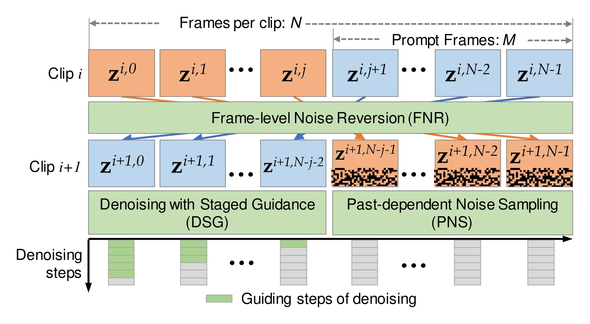
PNS：怎样产生新内容
下一段不能完全照着上一段生成。最直接的办法是：连接处多继承历史，后面的帧多保留变化空间。 #Gu-2023-VidRD
VidRD把新片段前面的少数帧称为prompt frames（提示帧），它们保留倒序噪声；其余帧则在历史噪声中混入新噪声。它不是给旧成片直接叠一层噪点，而是在生成下一段之前，调整下一段使用的初始潜噪声。 #Gu-2023-VidRD
| 新段中的位置 | 初始噪声怎样构造 | 目的 |
|---|---|---|
| 前M帧 | 保留倒序的历史噪声 | 为连接处提供相关起点 |
| 后面的帧 | 历史噪声与新噪声混合 | 允许后续内容发生变化 |
Past-dependent Noise Sampling（PNS，依赖历史的噪声采样）将新片段分成两部分：前\(M\)帧称为prompt frames（提示帧），保留倒序噪声；其余帧把历史噪声与新采样噪声混合。令\(\xi^{i,j}\sim\mathcal N(0,I)\)独立于历史，原论文Equation 7可等价写为 #Gu-2023-VidRD
这里\(\alpha\geq0\)控制历史噪声的比例，不是DDPM的\(\alpha_t\)噪声日程。\(\alpha=0\)时，后部帧采用全新噪声；\(\alpha\)越大，越接近只复用历史。前\(M\)帧不受这一步混合影响。 #Gu-2023-VidRD
为什么分母是\(\sqrt{1+\alpha^2}\)？若历史噪声的单帧边际是标准高斯，独立线性组合的方差就是 #Gu-2023-VidRD
同时它与被复用历史噪声的逐坐标相关系数为 #Gu-2023-VidRD
这两式是对原文采样式的教学推导：在不改变单帧噪声尺度的前提下，调节新旧片段的统计关联。这与VideoFusion、PYoCo中“噪声相关性影响视频连续性”的思路相关，但这里关联的是相邻生成片段的初始噪声；它不是沿估计光流搬运噪声，也没有学习一个运动方向。 #Gu-2023-VidRD
DSG：怎样让连接处更稳定
只给某帧相同的初始噪声，仍不够。视频U-Net同时读取其他帧；新片段的其他噪声、时序位置与联合上下文已经改变，该帧就可能走上不同轨迹。 #Gu-2023-VidRD
这 不违反确定性DDIM ：完整输入、条件与采样设置都相同，确定性过程仍会给出相同结果；这里只保持了某一帧的噪声，而没有保持整个视频输入。 #Gu-2023-VidRD
Denoising with Staged Guidance（DSG，分阶段引导去噪）于是再多借用一层信息：不只借初始噪声，还借上一段生成过程中的中间状态。 #Gu-2023-VidRD
它让新段靠前的帧在去噪早期直接沿用旧段对应帧的状态，先稳住粗结构；随后停止复制，让模型在新片段的上下文中继续生成。约束还会随帧位置逐渐减弱： #Gu-2023-VidRD
| 新段中的位置 | 复用旧中间状态的时间 |
|---|---|
| 最靠近接缝的帧 | 较长时间复用 |
| 稍靠后的提示帧 | 更早停止复用 |
| 后面的新内容 | 不复制旧状态，自行去噪 |
所以它的思路是：先借历史稳住起点，再逐步放开，让新片段形成自己的变化。 一直复制到最后会容易重放旧内容，完全不复制又可能接不上。 #Gu-2023-VidRD
下面再看公式怎样控制“什么时候放开”。令 \(\mathcal S_\theta(Z_t,c,t)_j\) 表示对整个新片段执行一次DDIM更新后，取第\(j\)帧的结果。原论文Equation 8可展开为 #Gu-2023-VidRD
这里暂设\(M>0\)。对于\(j\geq M\)，阈值不小于\(T\)，因此不会触发复制；\(M=0\)时应直接关闭提示帧的DSG分支，不能把零代进分母。 #Gu-2023-VidRD
这条式子的含义可以拆成三步： #Gu-2023-VidRD
- 去噪早期，高噪声阶段 ：新片段靠前的帧暂时沿用旧段对应帧的中间潜变量，继承其粗结构。
- 逐帧释放 ：\(j\)越靠后，阈值越高，能复制的早期区间越短；靠近新内容的帧更早交给模型自由去噪。
- 去噪后期 ：停止复制，让新片段在自己的联合上下文中细化，避免完整重放旧段。
例如\(T=1000,M=4,\beta=0.4\)，四个提示帧的阈值依次为600、700、800、900。第0帧在\(t>600\)时复制历史，第3帧只在\(t>900\)时复制；\(j\geq4\)不复制。实际使用50步DDIM时，要在其选取的时间表上应用这个规则，而不是实际运行1000次网络。 #Gu-2023-VidRD
\(\beta=0\)关闭全部状态复制；增大\(\beta\)延长历史引导。但复制得越多不一定越好：如果始终沿用旧状态，就会把旧动作也带回来。这里的“引导”是直接复用潜状态，与文本CFG的条件/无条件噪声线性组合是两种操作。 #Gu-2023-VidRD
因此，提示帧不是始终固定的干净已知帧。VidRD没有像掩码条件预测那样保证它们与上一段尾帧逐像素一致；原文描述每次生成\(N\)帧并拼接，也不宜自行改写为“严格重叠\(M\)帧、每次只追加\(N-M\)帧”的算法。 #Gu-2023-VidRD
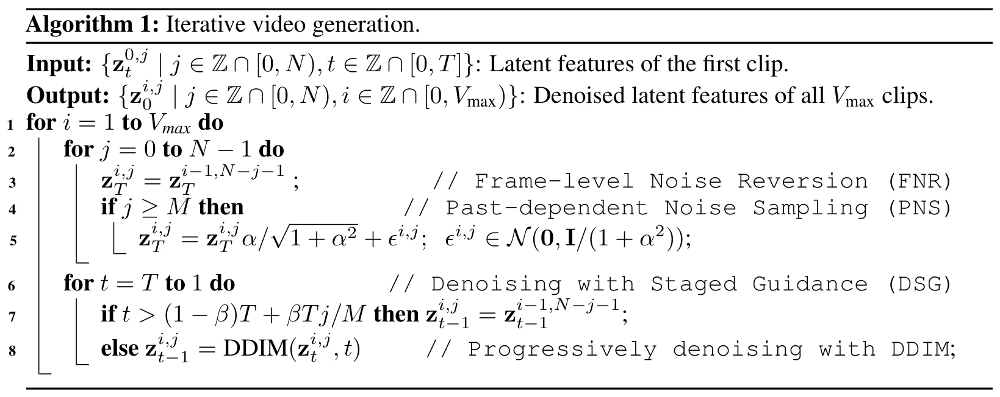
读算法时应把DDIM更新理解为视频模型的联合更新：图中简写成单帧\(z_t^{i,j}\)，不意味着每一帧独立调用一个图像模型。其关键输入也是已有片段的轨迹，不只是输入一段任意真实视频就能直接续写。 #Gu-2023-VidRD
从图像模型得到短视频模型
VidRD从Stable Diffusion 2.1出发，在U-Net中加入时间卷积（Temp-Conv）和时间注意力（Temp-Attn）。视频潜变量的形状为 #Gu-2023-VidRD
其中\(N\)是片段帧数，\(H,W\)是潜空间尺寸。已有空间 ResNet 把帧轴合并到批次轴，逐帧处理\((BN)\times C\times H\times W\)；新增时间卷积处理局部时序，时间注意力则在不同帧的对应空间位置之间交换信息。 #Gu-2023-VidRD
原论文将继承的ResNet称为“3D-ResNet”，但这里的 合并批次并不会让二维卷积自动获得时间感受野 。真正新增的跨帧计算来自时间模块；不要将其理解为把全部预训练二维卷积都改成了可学习的三维卷积。 #Gu-2023-VidRD
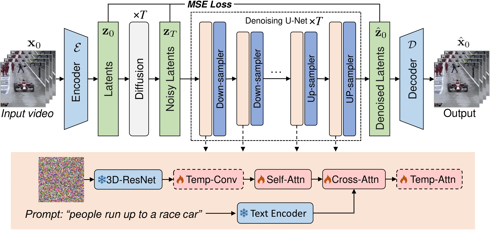
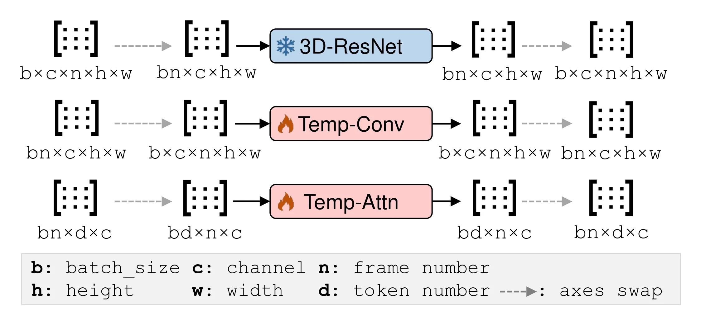
文本编码器与已有空间ResNet冻结；新增时间模块及空间Transformer块参与训练。原文报告U-Net约20亿参数，其中5.65亿可训练，3.16亿属于时间层。时间模块采用残差连接，并将末层置零，使模型从接近原图像模型的状态开始适应视频。 #Gu-2023-VidRD
其训练仍沿用潜扩散的去噪回归。为与前文统一，下面用噪声预测形式展开这个目标： #Gu-2023-VidRD
这是原文预备知识中通用去噪目标的噪声参数化展开；论文并未提出专门的“长视频loss”。上述续写机制主要改变推理时的初始状态与轨迹，而不是额外设计一套续写监督。 也不能仅凭此教学式，推断未披露的代码配置一定采用哪一种输出参数化。 #Gu-2023-VidRD
视频解码与训练数据
即使潜变量连续，逐帧图像解码器也可能把微小差异变成闪烁。VidRD在VAE解码器各块的ResNet之后增加时间卷积，冻结编码器与原有解码层，只训练新增时间层；新增层末层零初始化并使用残差连接。 #Gu-2023-VidRD
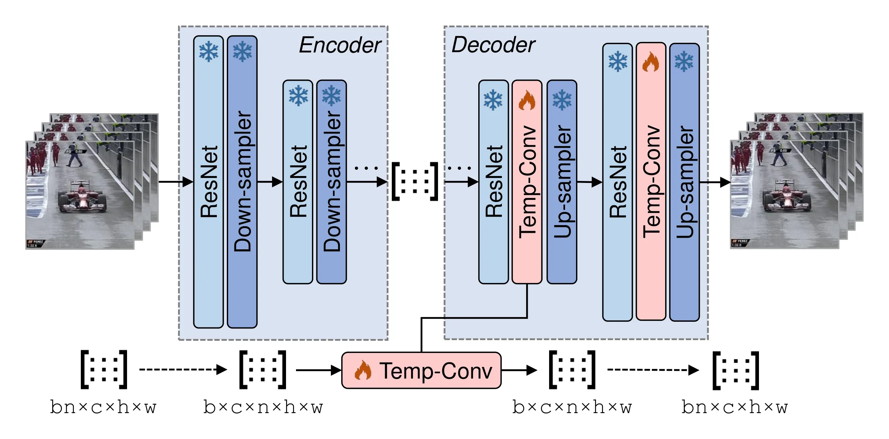
解码器训练沿用重建、潜表示正则与对抗项。整理原论文Equation 9的括号后，可写为 #Gu-2023-VidRD
论文给出重建与对抗项权重1和0.5，但正则权重排版为\(1^{-5}\)，存在歧义，不能擅自当作已经核实的\(10^{-5}\)复现参数。编码器冻结也意味着不能把这一步说成重新学习整个潜空间。 #Gu-2023-VidRD
训练数据包含四类。已有字幕的视频直接使用；短动作视频从随机帧结合类别名生成描述；长动作视频先用CLIP与MiniGPT-4筛选相关帧、切分片段，再补描述；图像则通过平移和缩放变成伪视频。伪视频让图像数据也能进入时间模块训练，但它主要模拟相机运动，并不能凭空提供真实物体动力学。 #Gu-2023-VidRD
| 数据集 | 使用片段数（千） | 平均时长（秒） |
|---|---|---|
| WebVid-2M | 1700 | 11.9 |
| TGIF | 100 | 3.1 |
| VATEX | 35 | 10.0 |
| Pexels | 360 | 19.5 |
| Moments-In-Time | 1000 | 3.0 |
| Kinetics-700 | 650 | 10.0 |
| VideoLT | 800 | 5.0 |
| LAION-5B派生伪视频 | 640 | 2.0 |
根据原论文Table 1完整整理，将数据集列转置为行。 #Gu-2023-VidRD 这里是筛选或转换后的片段数，不是原始数据集总容量；表中合计约528.5万，与主结果表中的5.3M为近似一致。
训练与续写如何分工
训练使用256×256视频，每隔4帧采样一个关键帧，共8帧，随机起点、缩放和裁剪。短片扩散模型训练完成后，续写采用相同模型，并通过FNR/PNS/DSG修改推理过程。论文实验使用DDIM，选择50步及CFG权重10；\(\beta=0.4\)，参数消融的基准组合另采用\(M=4,\alpha=4\)。不要把8帧训练窗口、16帧评测与50个去噪步骤混为一谈。 #Gu-2023-VidRD
实验支持了什么
| 方法 | 训练视频数 | IS ↑ | FVD ↓ |
|---|---|---|---|
| CogVideo | 5.4M | 25.27 | 701.59 |
| MagicVideo | 27.0M | — | 699.00 |
| LVDM | 2.0M | — | 641.80 |
| ModelScope | — | — | 639.90 |
| Video LDM | 10.7M | 33.45 | 550.61 |
| Make-A-Video | 20.0M | 33.00 | 367.23 |
| VideoFactory | 140.7M | — | 410.00 |
| VidRD：未微调VAE | 5.3M | 39.24 | 369.48 |
| VidRD：微调VAE | 5.3M | 39.37 | 363.19 |
根据原论文Table 2完整整理，为UCF-101零样本结果。 #Gu-2023-VidRD 作者依据类别分布生成1万段视频，每段16帧、256×256；VideoFactory则每类生成100段，协议并不完全相同。训练样本数也不等于统一训练成本，预训练图像模型和各数据处理流程不同。
VidRD微调VAE后FVD从369.48降到363.19，支持时间解码有帮助；相对于Make-A-Video的367.23，这个数值差距没有置信区间或重复实验支持，不能直接断言显著领先。更不能用16帧评测证明分钟级视频依然保持身份、动作推进与物理一致性。 #Gu-2023-VidRD
| 图像数据使用方式 | IS ↑ | FVD ↓ |
|---|---|---|
| 保留静态图像 | 42.00 | 451.16 |
| 平移/缩放构造伪视频 | 40.87 | 433.22 |
根据原论文Table 3完整整理。 #Gu-2023-VidRD 该消融使用5000段VATEX测试集视频与8000张LAION图像进行小规模微调，不是主实验训练集的直接替换。伪视频使FVD改善、IS下降，说明不同指标存在权衡；FVD同时涉及内容与运动分布，不能将它单独等同于纯粹的时间平滑度。
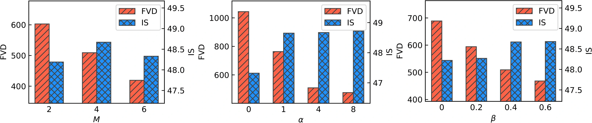
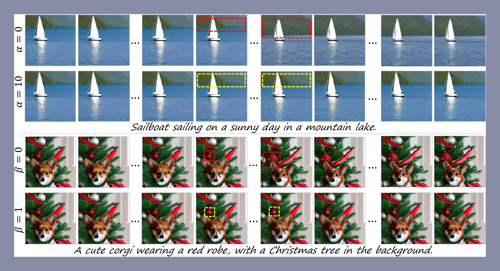
论文观察到，\(M\)或\(\beta\)过大时更容易出现content cycling（内容循环），而IS和FVD不一定能识别这种问题。这揭示了一个重要限制：统计上看起来像真实视频，不等于事件一直在合理地向前发展。 #Gu-2023-VidRD
小结与局限
现在可以把三个机制放回同一条主线： #Gu-2023-VidRD
| 机制 | 解决的问题 | 做法 |
|---|---|---|
| FNR | 下一段从哪里开始 | 倒序复用历史噪声，提供相关起点 |
| PNS | 怎样避免只重复旧内容 | 为后部帧混入新噪声 |
| DSG | 只复用噪声仍接不稳怎么办 | 复制部分早期去噪状态，再逐渐放开 |
因此，VidRD是一种利用采样历史续写视频的办法，并没有显式学会“接下来应该发生什么”。时间解码与数据构造为基础短片质量提供支撑，但这三种续写机制仍主要在推理阶段工作。 #Gu-2023-VidRD
与LVDM相比，它不为续写专门训练掩码条件预测任务，而是在现有生成器的推理中组织历史信息；代价是续写约束更偏向启发式，缺少对真实未来的显式监督。与VideoGen相比，它确实关注片段接续，而不仅是已有锚点之间插帧。 #Gu-2023-VidRD
它仍没有解决长期故事规划、动作持续前进和全局身份记忆：缓存主要来自上一片段，初始噪声倒序可能带来循环，提示帧也不是严格保持的已知帧。保存中间轨迹需要额外内存，每增加一个片段仍要执行一轮去噪；固定窗口降低的是单次联合生成的负担，不代表总时长增长没有成本。原文没有给出足以验证任意长视频质量的系统定量结果，也没有保证拼接边界严格连续。因此它应被理解为利用采样历史扩展短视频模型的实用尝试，而非已经解决长程一致性的完整方案。 #Gu-2023-VidRD
| 本章方法 | 长度或时间密度如何增加 | 条件与主要边界 |
|---|---|---|
| LVDM | 稀疏潜帧预测，再层次插值 | 需要相应条件训练；预测历史仍可能漂移 |
| VideoGen | 参考图引导后，对潜帧做运动场补帧 | 主要增加时间密度，不能等同长程续写 |
| VidRD | 复用相邻片段噪声和部分去噪轨迹 | 无需另训续写器，但可能内容循环 |
| NUWA-XL | 全片锚点后递归填充，区间并行 | 需要长跨度训练数据及并行资源 |
这里按机制对照四种方法，不表示它们采用相同数据、预算或评测协议。
参考文献
- He, Y., Yang, T., Zhang, Y., Shan, Y. & Chen, Q. Latent Video Diffusion Models for High-Fidelity Long Video Generation. 2022-11-23首发；依据2023-03-20的v2。视频自编码器、掩码条件、层次预测/插值、条件扰动、引导公式、Figures 2/6/7与Tables 1/2来源。项目页；官方代码。
- Li, X., Chu, W., Wu, Y., Yuan, W., Liu, F., Zhang, Q., Li, F., Feng, H., Ding, E. & Wang, J. VideoGen: A Reference-Guided Latent Diffusion Approach for High Definition Text-to-Video Generation. 2023-09-01首发；本节依据2023-09-07的v2。参考图条件、三级潜扩散、运动场时间超分、视频解码器、Figures 2/5/6/7与Tables 1/2/3来源。官方项目演示页。
- Gu, J., Wang, S., Zhao, H., Lu, T., Zhang, X., Wu, Z., Xu, S., Zhang, W., Jiang, Y.-G. & Xu, H. Reuse and Diffuse: Iterative Denoising for Text-to-Video Generation. 2023-09-07首发。VidRD短片模型、FNR/PNS/DSG、时间解码、原论文Figures 2/3/5/6/9/10、Algorithm 1及Tables 1/2/3来源。论文所列项目页；官方代码入口。
- Yin, S., Wu, C., Yang, H. 等. NUWA-XL: Diffusion over Diffusion for eXtremely Long Video Generation. 2023-03-22首发；本节依据arXiv v1。T-KLVAE、MTD、多尺度视觉条件注入、递归时间细化、FlintstonesHD、Figures 1–4与Tables 1/2来源。论文所列项目页。